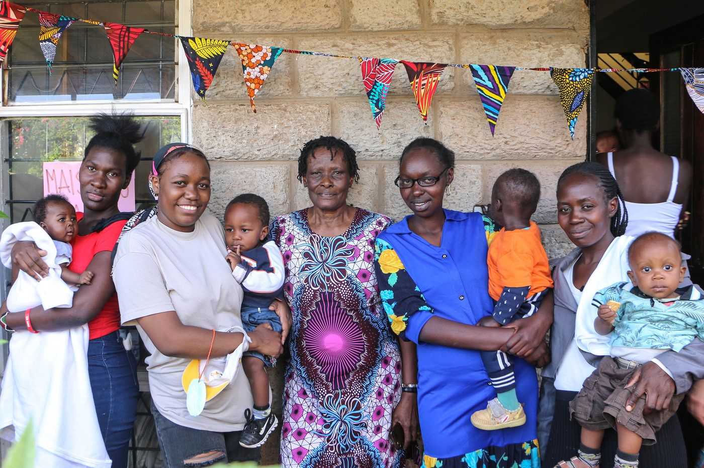
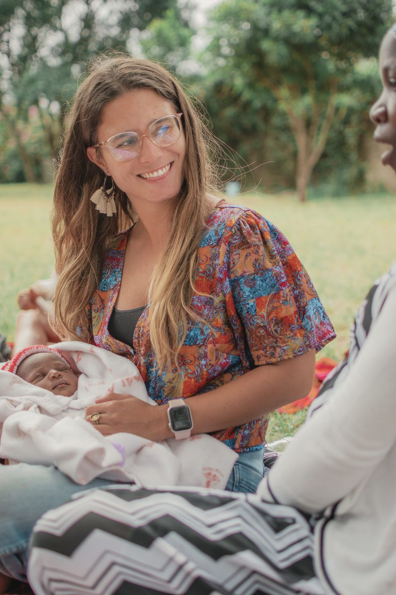
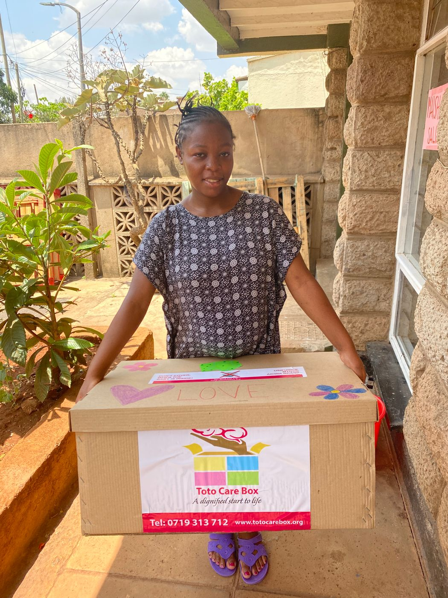
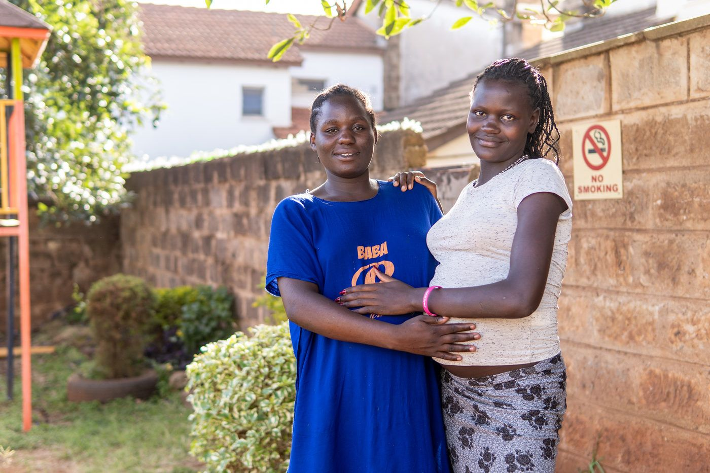

Programa Acogida · Al llegar
Nadie debería vivir su embarazo sola
Mediante nuestro programa de acogida brindamos acompañamiento integral a embarazadas en crisis durante el embarazo y el postparto.
 Karibu, mamá
Karibu, mamáQué hacemos
Cómo acompañamos
Acompañamiento 24/7
Apoyo telefónico permanente, visitas domiciliarias y un hogar temporal para madres que no cuentan con una red de apoyo.
Necesidades básicas
Entregamos insumos, alimentación y cuidado a cada mujer y a su recién nacido.
Comunidad
Organizamos encuentros de madres con la comunidad local y con la red de voluntarios Maisha en terreno.

Recibir y acoger a cada mamá Maisha, escuchar sus historias, llegar a un nivel de intimidad donde me confiaron sus vivencias, sus alegrías y sus tristezas. De pronto habíamos atravesado todas las barreras culturales. En ese momento éramos dos mujeres completamente distintas y tan similares a la vez, riendo y llorando juntas.
Margarita CuryVoluntaria Acogida 2022
Galería
En terreno





Ayúdanos a que más madres lleguen a acogida
Con un aporte mensual sostienes el trabajo en Kibera durante todo el año.
Otros programas